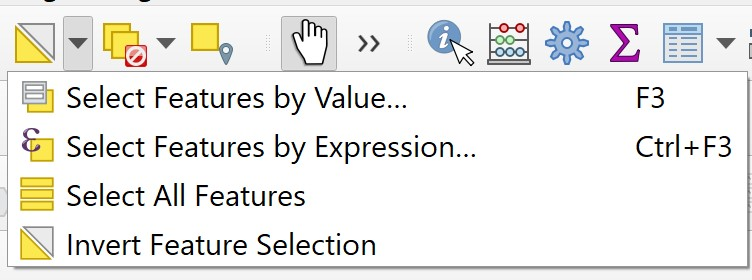
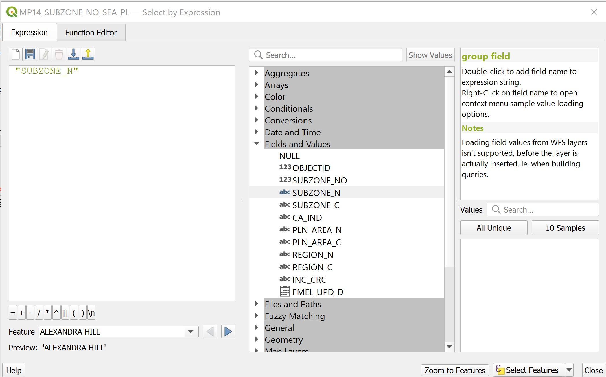
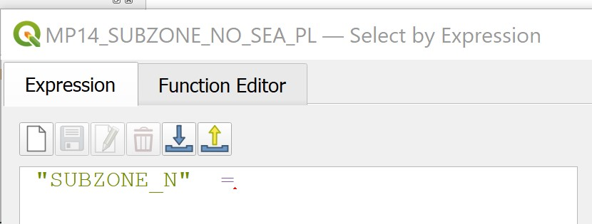
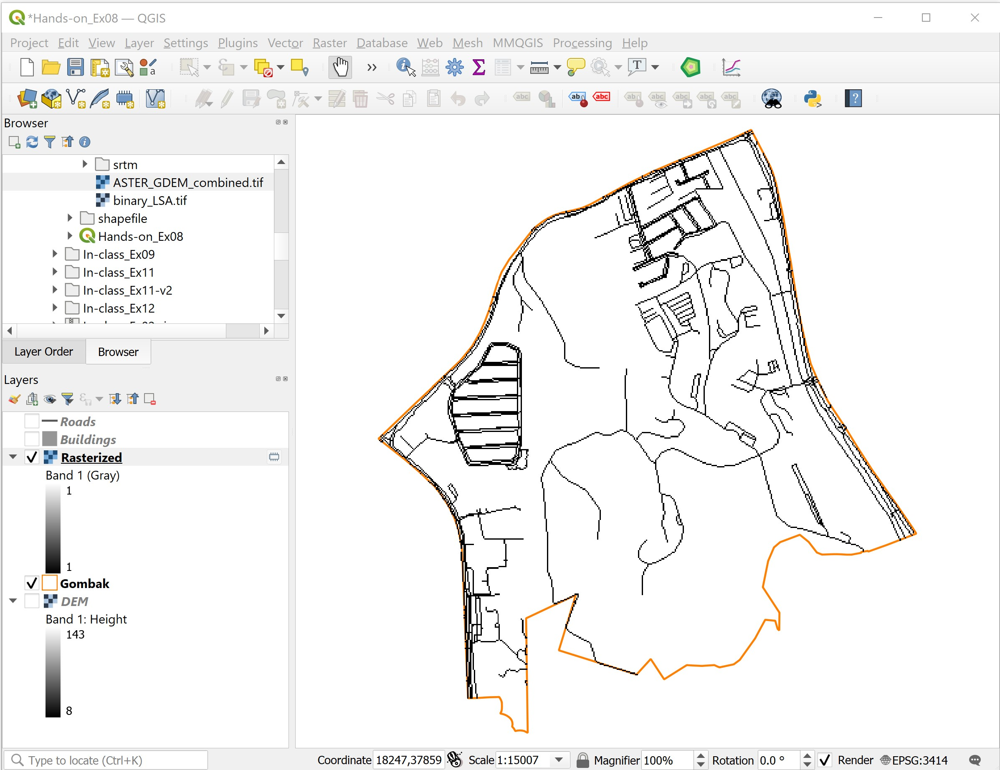
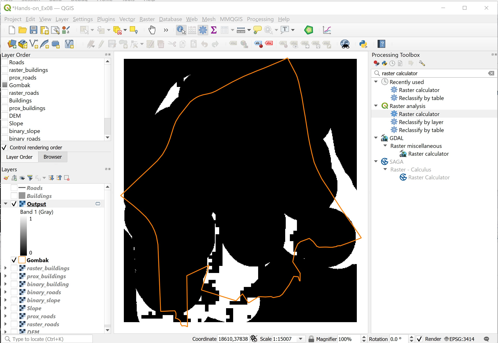

8 GIS Modelling for Urban Land Suitability Study
8.1 Overview
Urban land suitability analysis is the process and procedures used to identify places that meet the selection criteria of the stakeholder(s). By and large, many different geographical factors will be taken into consideration in the process. GIS with its capability of extracting, processing, managing, analyzing and presenting geographically referenced data. GIS allows one to undertake a wide variety of logical and mathematical analysis and then display the results in either a map or tabular form.
8.1.1 The Task
In this exercise, you are tasked to identify location suitable for building a national Communicable Disease Quarantine Centre. The selected site must be located at Gombak planning subzone and it must meet the followings decision factors:
- Economic factor: The selected site should avoid steep slope. This is because construction at steep slope tends to involve a lot of cut-and-fill and will lend to relatively higher development cost.
- Accessibility factor: The selected site should be close to existing roads i.e. service roads and tracks. This is to ensure easy transportation of building materials during the construction stage.
- Health risk factor: The selected site should be away from population i.e. housing areas and offices in order to avoid disease spreading to the nearby population.
8.1.2 The Data
Three major data sets will be used in this hands-on exercise. They are:
- Master Plan 2014 Subzone Boundary from URA. This data can be downloaded from data.gov.sg.
- Roads and buildings data from OpenStreetMap (OSM) data sets. These data can be downloaded from BBBike@Singapore.
- ASTER Global Digital Elevation Model (GDEM) dataset jointly prepared by NASA and METI, Japan. This data can be downloaded from NASA’s EarthData Search site.
The GDEM data set is already provided in the hands-on exercise data folder. Both Master Plan 2014 and the OSM data sets, on the other hand, have to be downloaded from their respective sources provided above.
8.2 Data Preparation
In this section, you will revise the steps used to extract GIS data within the study area. You are encouraged to work out the steps first, then compare the steps used by you and the steps below.
8.2.1 Extracting study area
Master Plan 2014 Subzone Boundary from URA consists of polygon featuring all planning subzone data of Singapore. Since the proposed site must be in Gombak planning subzone, we will extract the polygon feature of Gombak from this GIS data.
Many approaches can be used to extract Gombak planning subzone from the GIS data of Master Plan 2014 Subzone Boundary. The example below uses Select Features by Expression operation of QGIS to perform the task.
DIY: Using the steps you had learned in the previous hands-on exercise, import Master Plan 2014 Subzone Boundary into QGIS project.
Your screen should look similar to the figure below.

Note: The projection of the project should be in svy21. If it is not, you should change the projection of the project by using the steps you had learned in previous hands-on exercise.
8.2.2 Selecting features by expression
- From the Selection menu bar, click on Select Features by Expression.

The Select by Expression dialog window appears.

- Since we are going the select
Gombakplanning subzone, click on the Field and Values pane to look for the appropriate field. - Double click on
SUBZONE_N.
The Select by Expression dialog window should look similar to the screen below. Notice that the SUNZONE_N field has been entered in the expression panel.

- Click on the equal marker icon at the expression panel.
The expression panel should look similar to the figure below.

- Click on All Unique button, then double-click on
GOMBAK.

The expression panel should look similar to the figure below.

- Click on Select Features icon to execute the selection.
QGIS will indicate the number of feature(s) been selected.
- When it is done, click on the Close button.
The Selection by Expression dialog window closes.
Your screen should look similar to the figure below.

Notice that one polygon feature has been selected.
8.2.3 Saving the selected feature in Geopackage format
Next, we are going to save the selected polygon feature in a new GIS data in GeoPackage format.
DIY: Using the steps you had learned in the previous hands-on exercise, save the selected Gombak polygon feature into a new GeoPackage call
LSA. Name the GIS layerGombak.
Your screen should look similar to the screenshot below.
DIY: The original planning subzone layer is no longer needed. Using the steps you had learned in the previous hands-on exercise, remove Master Plan 2014 Subzone Boundary from the QGIS project.
8.3 Extracting vector data
In this section, you will learn how to extract the buildings and roads within the study area by using appropriate GIS operations. Before you get started, however, you are required to import the necessary GIS data into the QGIS project.
DIY: Using the steps you had learned in the previous hands-on exercise, import
buildingsandroadsshapefiles of osm into QGIS project.
Your screen should look similar to the screenshot below.
8.3.1 Working with Selection by Location function of QGIS
In this sub-section, you will learn how to extract buildings features fall within Gombak study area by using Selection by Location function of QGIS.
- From the icon bar, click on Select by Location icon.
The Selection by Location dialog window appears.

- For Select features from, select the feature layer you want to select from i.e.
buildingsfrom the drop-down list. - For By comparing to the feature from, select the feature layer you want to use as reference i.e.
Gombakfrom the drop-down list. - For Where the features (geometric predicate), check the box in front of intersect.
- For Modify selection by, select creating new selection from the drop-down list.
Your screen should look similar to the screenshot below.

To run the operation,
- Click on Run button.
To close the dialog window,
- Click on Close button
Notice that all buildings features fall within Gombak study area are selected (the lightlighted polygon features) as shown in the figure below.
Optional
Before we end this section, you need to save the newly selected buildings layer into GeoPackage format.
DIY: Using the steps you had learned in the previous hands-on exercise, save the extracted buildings layer in GeoPackage format. Call the layer
Buildings.
8.3.2 Working with Clip operation
In this sub-section, you will learn how to extract buildings features fall within Gombak study area by using Clip operation of QGIS.
- From the icon bar, click on Deselect Features from the Current Active Layer. Note: This is only true if the selected layer is
buildings.

- From the menu bar, select Vector -> Geoprocessing Tools -> Clip.
The Clip dialog window appears.
- For Input layer, select the input layer that you want to clip i.e.
Buildings. - For Overlay layer, select the layer that will be used as the reference i.e.
Gombak. - Keep the Clipped option as default i.e. Create temporary layer.
The Clipped option is for you to specify how the output should be generated. You can either save the output as a physical data layer or keep the output as temporary layer. It is always a good practice to keep the output as a temporary layer so that we can examine the result. After we have confirmed the result is correct, we can then save it into the database.
Your screen should look similar to the screenshot below.

You are ready to run the operation now.
- Click on Run button.
When the geoprocessing is done, the dialog window will look similar to the screenshot below.

Do note that it is a good practice to read the details that appear on the dialog window. This is particularly true when the operation failed. The dialog window will display the possible causes of the failed operations.
- Click on Close button.
The dialog window closes.
Notice that a temporary layer called Clipped is added into Layers panel and displayed as an active layer.
8.3.3 Saving the output layer into GeoPackage format
Before we end this section, you need to save the newly extracted buildings layer into GeoPackage format.
DIY: Using the steps you had learned in the previous hands-on exercise, save the extracted buildings layer in GeoPackage format. Call the layer
Buildings. Next, remove the original buildings and temporary buildings layers from QGIS project.
8.3.4 Extracting roads layer
DIY: Using the steps you had learned in the previous hands-on exercise, extracting the roads features fall within Gombak planning subzone from the original OSM GIS data layers. Compare which operations is more appropriate and explain why it is more appropriate. Remember to save the extracted roads layer into GeoPackage and name it as
Roads.
Your screen should look similar to the screenshot below.
8.4 Extracting raster data
In this section, you will learn how to extract the Digital Elevation Model (DEM) data fall within Gombak planning subzone by using appropriate raster-based GIS operations. Before we get started, we will important the ASTER GDEM provided into QGIS project.
8.4.1 Importing raster GIS data layer
- From Browser panel, navigate to raster sub-folder
- Drag and drop
ASTER_GDEM_combined.tifinto Layers panel.

Your screen should look similar to the figure below.
8.4.2 Working with raster clip operation
QGIS provides two operators to perform raster clipping, namely: Clip Raster by Extent and Clip Raster by Layer. In this sub-section, Clip Raster by Extent function will be used.
- From the menu bar, select Raster <- Extraction <- Clip Raster by Extent.
The Clip Raster by Extent dialog window appears.
- For Input layer, select ASTER_GDEM_combined from the drop-down list.
- For Clipping extent, click on the icon at the end of the option then select Calculate from Layer.
- Select
Gombakfrom the drop-down list.
Your screen should look similar to the screenshot below.
- When you are ready, click on Run button.
- When the process completed, read the process log to ensure that there is no error.
- Click on Close button to close the dialog window.
Notice that a new raster layer called Clipped (extend) is added into Layers panel and displayed on the View as shown in the screenshot below.
8.4.3 Saving the newly clipped raster layer into GeoPackage format
DIY: Using the steps you had learned from previous hands-on, save the clipped layer of DEM into GeoPackage format and call it
DEM.
DIY: Using the steps you had learned in previous section, remove Clipped (extend) layer from QGIS project.
8.5 Computing Factor Data
In this section, you will learn how to use raster GIS operation to derive analytical layers from the original geographic layers.
8.5.1 Computing proximity to roads
In this section, you will learn how to create a proximity to roads layer by using the Proximity (Raster Distance) operation of QGIS. However, before we can perform the computation, we need to rasterise the roads layer. This is because the Proximity (Raster Distance) requires the input GIS layer in raster format.
8.5.2 Creating attribute field for rasterising
Before we can rasterise the roads layer, we need to add a control attribute field in the roads layer.
- At the Layers panel, click on Roads layer to make it active.
- From the icon bar, click on Open Attribute Table icon .
The attribute table of roads layer appears.
- From the menu bar of roads layer attribute table, click on Open field calculator icon.
The Field Calculator dialog window appears.
- Keep Create a new field option checks.
- For Output field name, type
POI_CODE. - At the Expression pane, type 1.
Your screen should look similar to the figure below.

- Click on OK button to run the function.
Notice that a new field called POI_CODE has been added into the attribute table of roads GIS layer. Also note that all the records are indicated with POI_CODE values equals to 1.

You are now ready to rasterise the roads layer.
DIY: Before moving to the next section, remember to stop and save the editing.
8.5.3 Rasterising roads layer
- From the menu bar, select Raster -> Conversion -> Rasterise (Vector to Raster).
The Raster (Vector to Raster) dialog window appears.
- For Input layer, select
Roadsfrom the drop-down list. - For Field to use for a burn-in value, select
POI_CODEfrom the drop-down list. - For Output raster size units, select Georeferenced units.
- Keep both horizontal and vertical resolutions at 5 (meaning 5m by 5m resolution).
- For Output extent, click on Calculate from Layer.
- Select DEM from the drop-down list.
When you are ready,
- Click on Run button.
When the operation ended, the dialog window will display the operation log.
- Read the output display to ensure that the process has completed without any error.
After confirming that there is no error. You can close the dialog window.
- Click on Close button.
Notice that a temporary layer called Rasterized has been added in QGIS project.

DIY: Using the steps you have learned in previous section, save the temporary layer into GeoPackage format. Call the newly exported layer
raster_roads. Next, remove the temporary layer from QGIS.
8.5.4 Working with Proximity function of QGIS
Now, the Proximity operation of QGIS will be used to compute the proximity to roads layer.
- For the menu bar, select Raster -> Analysis <- Proximity (Raster Distance).
The Proximity (Raster Distance) dialog window appears.
- For Input layer, select
raster_roadsfrom the drop-down list. - For Distance units, select Georeferenced coordinates from the drop-down list.
- For Output data type, select Float32 from the drop-down list.
Your screen should look similar to the screenshot below.
- Click on Run button.
Your screen should look similar to the figure below.

A temporary layer called Proximity map is created and added in QGIS project. The legend of Proximity map layer indicates that the furthest distance from the roads is 708 metres.
DIY: Using the steps you had learned, save the newly computed proximity map into GeoPackage format with a resolution of 5m x 5m. Call the layer
prox_roads. Next, remove the Proximity map layer from QGIS.
8.5.5 Computing proximity to buildings
DIY: Using the steps you had learned, create the proximity layer to buildings. Save the output into GeoPackage format with 5m x 5m resolution. Called the output layer
prox_buildings.
The prox_buildings layer should look similar to the figure below. The grid values indicate distance away from existing building in metres.

8.5.6 Computing slope
In this section, you will learn how to compute a slope layer from DEM layer by using the Slope operation of QGIS.
- From the menu bar, select Raster -> Analysis -> Slope.
Slope dialog window appears.
- For Input layer, select
DEMfrom the drop-down list.
Keep the rest of the setting as default.
- Click on Run button.
When the computation completed, a temporary layer called Slope will be added in QGIS project.
The legend of Slope layer shows that the minimum and maximum values of the slope values are 0 and 36.8795 degrees respectively. The grids with darker grey indicate locations with relatively gentle slope. On the other hand, the light grey grids indicate locations with steeper slope.
- Click on Close button to close Slope function dialog window.
DIY: Using the steps you had learned, save the newly computed
Slopetemporary layer into GeoPackage format. Called the output layerSlope.
8.6 Binary Model
A binary land suitability model is the simplest GIS modelling approach analogous to the manual procedures for map analysis popularized in the classic landscape planning book entitled Design with Nature by Ian L, Mcharg (1969).
8.6.1 Deriving binary layers
Before we generate the land suitability map, we will first derive a preference layer for each factor layer under consideration. These preference layers will be encoded in binary form whereby 1 denotes suitable and 0 denotes not suitable.
For this land suitability analysis, the followings have been suggested:
- Economic factor: < =15deg slope
- Accessibility factor: <= 200m from roads.
- Health risk factor: >= 250m away from population i.e. housing areas and offices.
8.6.2 Deriving slop preference layer
To derive the preference layer for slope, the Reclassify operation of QGIS will be used. In QGIS there are two sets of Reclassify operators. One set is provided natively by QGIS under the Raster analysis family in Processing Toolbox. The second set of Reclassify operators is from SAGA (http://www.saga-gis.org/en/index.html). For the purpose of our analysis, the Reclassify by table function of QGIS will be used.
- From the menu bar, click on Processing -> Toolbox.
By default, Processing Toolbox will appear on the right-hand side of the QGIS project window as shown in the screenshot below.

There are more than 600 hundred functions provided by QGIS processing toolbox. The easier way to look for a function is by using the search function. For example, by type the word reclassify in the search, Processing Toolbox lists the reclassify functions available as shown in the screenshot below.

- Double click on Reclassify by Table function.
The Reclassify by Table dialog window appears.
- For Raster layer, select the target raster layer you want to process i.e.
Slopefrom the drop-down list. - Click on the button at the end of Reclassification table.
The Fixed table dialog window appears.

- Click on the Add Row button.
Your screen should look similar to the screenshot below.

- Type in the values as shown in the screenshoot below.

Basically, the value ranges above recode all cell values into either 0 or 1 by using 15 as the cut-off value.
- Click on OK button to close the dialog window.
- From the Range boundaries, select min < value <= max from the drop-down list.

Caution: Select the appropriate range defination in order the ensure the output values are mutually exclusive and truly reflect the cut-off value(s).
- For Output data type, select Float32 from the drop-down list.
When you are ready,
- Click on Run button.
When to process completed, the processing log appears.
It is a best practice to read the report carefully, special attention should be given to the section of Using classes.
- Click on Close button to close the dialog window.
A temporary layer called Reclassified raster will be added in QGIS project as shown in the screenshot below.

According to the legend, the black grids indicate locations with slope value greater than 15 degrees and white grids indicate locations with slope value less than or equal to 15 degrees.
DIY: Using the steps you had learned in previous section, save the temporary output layer into GeoPackage format. Call the data layer as
binary_slope.
DIY: Repeat the steps above to derive the preference layers for accessibility and health risk factors. Save the temporary output layers into GeoPackage format and name the data layers as
binary_roadsandbinary_buildingsrespectively.
The binary_road should look similar to the screenshot below.

The binary_road should look similar to the screenshot below.

8.6.3 Computing composite binary suitability layer
Now, it is time for us to put the Humpty Dumpty together. The task will be accomplished performed by map algebra operation of GIS. Map algebra is a set-based algebra for manipulating geographic data, proposed by Dr. Dana Tomlin in the early 1980s. It is a set of primitive operations in a geographic information system (GIS) which allows two or more raster layers (“maps”) of similar dimensions to produce a new raster layer (map) using algebraic operations such as addition, multiplication etc (https://en.wikipedia.org/wiki/Map_algebra). In this section, you will perform map algebra computation by using Raster Calculator function of QGIS.
- At the Search pane of Geoprocessing Toolbox panel, type raster calculator.
Your screen should look similar to the screenshot below.

The search result shows that there are three raster calculator functions are available in QGIS. For this task, the Raster calculator of Raster analysis will be used.
- Double-click on Raster calculator of Raster analysis.
The dialog window of Raster Calculator appears.
- At the Layers panel of Raster Calculator dialog window, double-click on
binary_buildingslayer.
Notice that the Expression pane of Raster Calculator dialog window will be updated as shown below.

- Next, click on the multiplication icon.
- Next, double-click on
binary_roadslayer. - Next, click on the multiplication icon.
- Next, double-click on
binary_slopelayer.
The final expression should look similar to the screenshot below.

My two cents worth: As a beginner, it is advisible not to type the syntax by hand in order to avoid unnecessary typo error.
Next, you need define the output layer format. Raster Calculator provides two ways to define the output layer format.
Firstly by using the Reference layers(s) interface.
- Click on the icon located at the end of the interface.
The Multiple selection dialog window appears.
- Click on the check-box in front of the raster layer(s) you want to use as the reference layer(s) i.e.
binary_buildings.

- Click on OK button to close the dialog window.
Alternatively, you can provide the output layer specification using the individual interfaces as shown in the screenshot below.

- For Output, keep the default.
- Finally, click on Run button to run the operation.
When the processing completed, refer to the process log to ensure that there is no error.

- Click on Close button to close the Raster Calculator dialog window.
Notice that a temporary raster layer called Output is added in QGIS project.

With reference to the Output raster layer, the white grids indicate location suitable for the proposed land development. The black grids, on the other hand, indicate location not suitable for the proposed land developmnet.
DIY: Using the steps you had learned in previous section, save
Outputlayer in GeoPackage format. Call the data layerbinary_model. Then, remove the temporaryOutputraster layer from QGIS project.